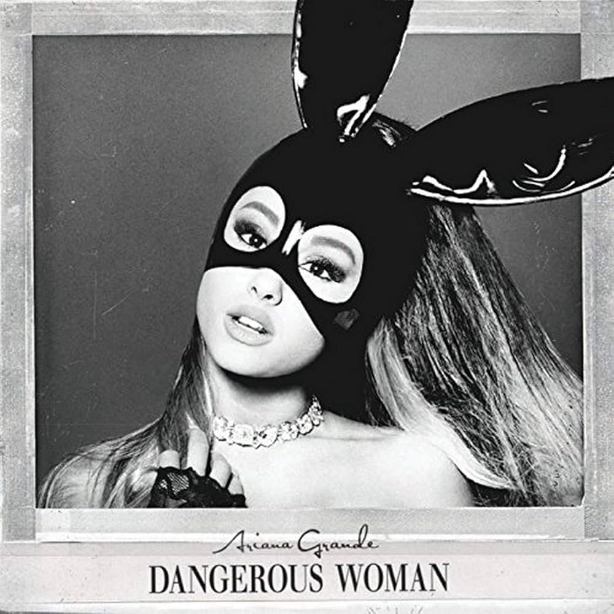

Álbuns Mais Famosos
Polemicas
ARIANA GRANDE
Biografia
Músicas

Namorado
Abuso Nickelodeon
Ataque Terrorista
Casamento
Fascínio em Serial Killers
Ariana Grande-Butera, mais conhecida pelo nome artístico, Ariana Grande, nasceu em uma cidadezinha localizada na costa sudeste da Flórida, Boca Raton, no dia 26 de junho de 1993. É filha de Edward Butera (pai), CEO da Ibi Designs Inc., empresa de design, e de Joan Marguerite Grande (mãe), CEO de uma empresa chamada Hose-McCann Communications, além de ter um meio irmão, Frankie James Grande, que também possui uma carreira que o procede, sendo ator, compositor e cantor.
Ariana marcou sua inserção no mundo artístico com apenas 15 anos, quando fez sua estreia na Broadway em um musical chamado “13” no ano de 2008, além de ter participado, quando pequena, em diversas outras peças, como versões de “Annie”, “O Mágico de Oz” e “A Bela e a Fera”.
Mas sua visibilidade se iniciou de fato quando foi escalada como uma das personagens principais de uma sitcom norte-americana chamada “Victorious” no canal de entretenimento juvenil “Nickelodeon”. Nesse trabalho ela interpretou o papel de Cat Valentine entre março de 2010 e fevereiro de 2013, logo, meses depois, em junho do mesmo ano, Ariana reprisou a mesma personagem em um spin-off de comédia intitulado “Sam & Cat” até julho de 2014.
Ambos os papeis interpretados e protagonizados nesses programas pela artista definiram definitivamente o início e andamento do trajeto de sua carreira, pois até hoje ela é muito aclamada pelo público pelo incrível trabalho que fez. Além desses projetos, Ariana fez parte de vários outros como por exemplo, uma aparição no episódio “Bad Bad News” do seriado “The Battery's Down” (2009), as animações “Snowflake, the White Gorilla” (2011) e “Winx Club” (2011-2013), participação especial em um episódio da sitcom “iCarly” no ano de 2011, a comédia “Swindle” (2013), série reconhecida da Netflix “Scream Queens” (2015), etc.
Nesse meio tempo, Ariana Grande já iniciava a conciliação de ser atriz com o fato de querer seguir seu sonho de ser cantora, assim gravando covers para seu canal pessoal do Youtube. Desde pequena ela já tinha um grande apreço pela música, e até uma artista favorita, sendo ninguém mais ninguém menos que Céline Dion.
Não demorou muito para a voz sem igual e o talento incrível dela ser notado por milhares de pessoas, com isso chamou a atenção da gravadora Republic Records, com a qual ela assinou seu primeiro contrato na carreira musical em 2011. A partir de então, ela começou a se envolver de corpo e alma no seu grande sonho, dessa forma, no final desse mesmo ano, Ariana lançou seu primeiro single intitulado “Put Your Hearts Up”. A princípio ficou reconhecida como “princesinha do pop adolescente”, mas isso não a impediu de continuar com o seu trabalho, quando finalmente seu primeiro álbum, “Yours Truly”, ficou pronto em 2013.
O disco estreou no topo nas paradas americanas, Billboard 200, além do fato de que a música "The Way", chegou no top 10. Críticos chegaram a comparar a extensão vocal da cantora com a de Mariah Carey, uma de suas inspirações, assim como Madonna, Fergie, Christina Aguilera, Amy Winehouse, Destinys Child, etc.
Não demorou muito tempo para Ariana lançar mais um projeto: o EP natalino “Christmas Kisses” no dia 13 de dezembro de 2013. Assim a artista entrou em um ritmo de produzir hit após hit, como o segundo álbum “My Everything”, lançado 22 de agosto de 2014, que também se tornou número 1 na Billboard 200, vendendo aproximadamente 169.000 cópias apenas na primeira semana. As canções que mais se destacaram foram "Problem", com a participação de Iggy Azalea, alcançando o segundo lugar na Billboard Hot 100; "Break Free" em parceria com o DJ russo-alemão Zedd, que chegou ao top 10 em diversos países como Austrália, Canadá, e Estados Unidos. Todos as faixas desse álbum foram certificadas com platina pela RIAA.
O terceiro disco, “Dangerous Woman” foi lançado em 2016 e estreou em segundo lugar na Billboard 200, vendendo em torno de 270 mil cópias apenas nos Estados Unidos. Sem contar sua indicação ao Grammy na categoria "melhor álbum pop vocal" e em pouco tempo vendeu mais de 1 milhão de cópias mundialmente. Os grandes destaques foram as faixas: ''Dangerous Woman''(11 de março de 2016), que fez Ariana ser a primeira artista, na época, a ter todos os primeiros singles de seus três álbuns no top 10 da parada; "Into You", (6 de maio de 2016) com um sucesso mediano, fazendo parte do top 15 das paradas de sucesso do USA, UK e Australia; “Side to Side"(setembro de 2016) foi considerado um hit mundial, cujo alcançou o 4° lugar na Billboard Hot 100.
Nos primeiros oito anos de carreira, Ariana Grande acumulou em torno de 120 milhões de discos e singles pelo mundo todo, sendo considerada um dos artistas musicais mais vendidos de todos os tempos.
break up with your girlfriend, i'm bored
bad idea
bloodline
Side To Side
Dangerous Woman
God is a Woman
Break Free
Into You
ETERNAL SUNSHINE
DANGEROUS WOMAN
Voltar Para Página Inicial